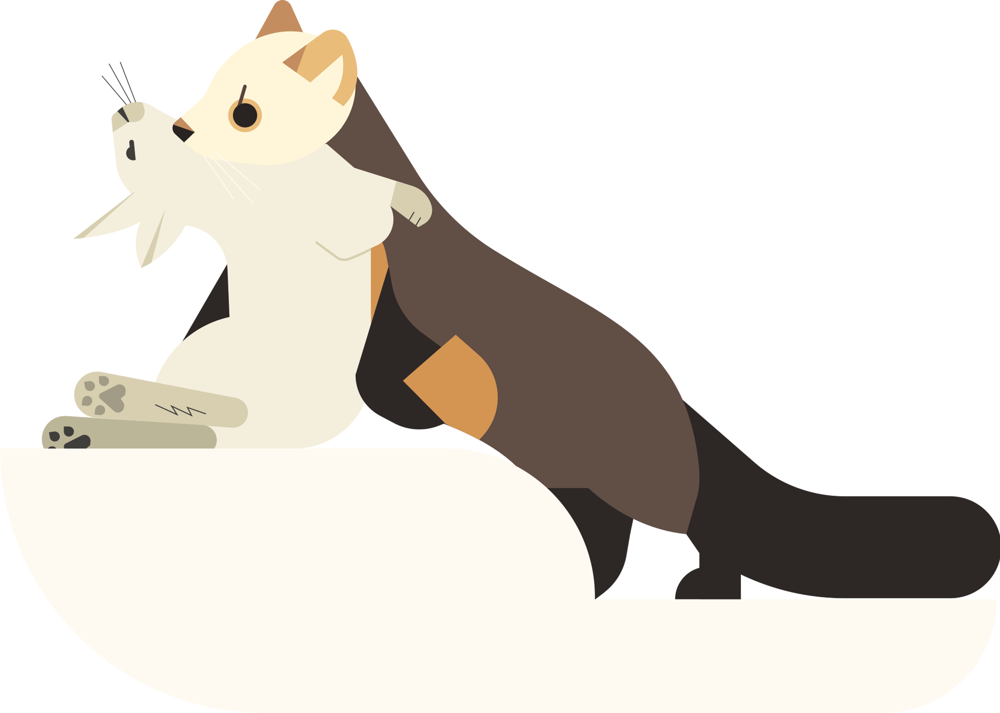

This web page is a semester-long project meant to be a compilation of research about the different species of martens. It is meant to be educational and interactable, making learning more accessible and entertaining. This page focuses on the marten, a species that is widespread around the globe, yet underappreciated for their unique abilities and evolutionary traits. It is meant to showcase their diversity in size, appearance, and climate.
